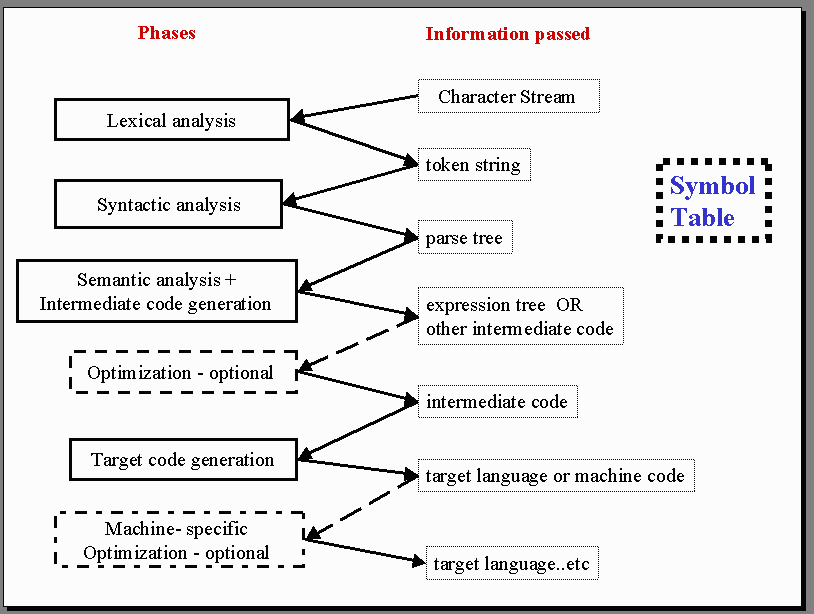
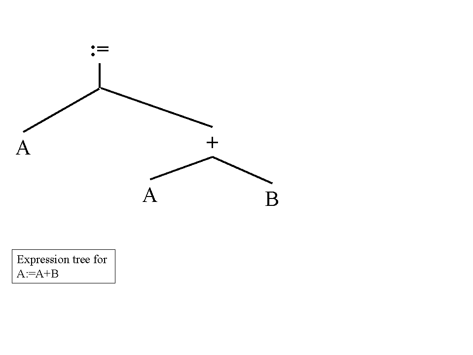
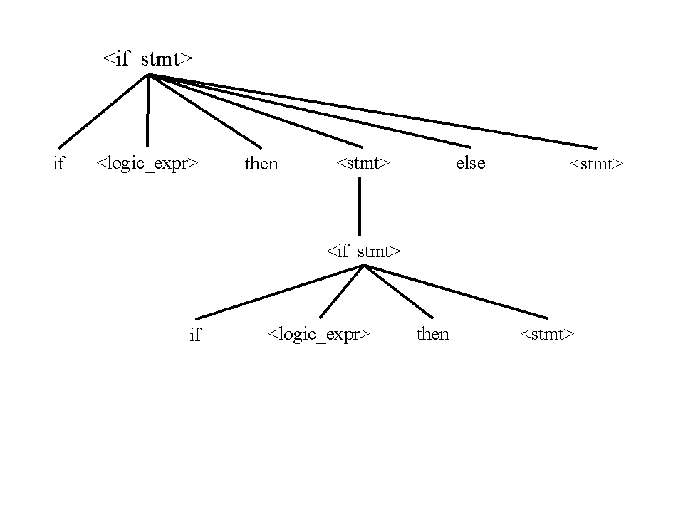
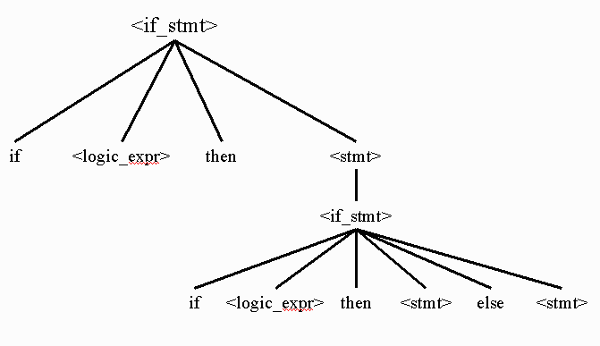
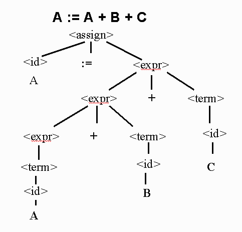

Syntax Spring, 2000
What will be covered ?
-
Phases of Compilation
-
Lexical Analysis - Regular Expressions
-
Syntactic Analysis - Extended Backus-Naur Form (EBNF)
-
Shift Reduce Parser
-
What does it mean?
Phases of Compilation

Lexical Analysis
-
Tokens are basic building blocks of a program
-
keywords / reserve words
-
literals
-
variables
-
Regular expressions used
-
Finite Grammars
-
Grammars are used to describe recursive patterns
-
Scanners
Syntactic Analysis - BNF
-
BNF (Backus-Naur Form) is a metalanguage for programming languages.
-
BNF is a popular notation for a context free grammar. (EBNF is Extended
BNF)
-
Set of productions (also called rules)
<expr> ::= <expr> + <term>
|
<term>
-
Terminal symbols
-
Non terminal symbols
<statement>
<compilation-unit>
-
Example - Grammar for a Small Language
<program> ::=
begin <stmt_list> end
<stmt_list> ::=
<stmt>
|<stmt>
; <stmt_list>
<stmt> ::=
<var> := <expression>
<var> ::=
A
|
B
|
C
<expression> ::=
<var> + <var>
|
<var> - <var>
|
<var>
-
Derivation of A := A + B
<program> => begin <stmt_list> end
=> begin <stmt> end
=> begin <var> := <expression> end
=> begin A := <expression> end
=> begin A := <var> + <var> end
=> begin A := A + <var> end
=> begin A := A + B end
-
This is a leftmost derivation.
-
Example of top down parsing.
-
Each string in the derivation is called a sentential form.
-
Example from Sebesta 96
-
Parse Tree is a Visualization of a Derivation

-
Expression Tree
-
Parse trees can be transformed into Expression Trees

-
A Rule for <if-statement>
<stmt> ::= …|
<if_stmt>
<if_stmt> ::= if <logic_expr>
then <stmt>
| if <logic_expr> then <stmt> else <stmt>
-
What is the parse tree for the sentential form:
if <logic_expr> then if <logic_expr>
then <stmt> else <stmt> ?

-
Since there are two parse tree for the same sentential form this grammar
is ambiguous but the language is not.
-
Sometimes languages are ambiguous
-
This presents a problem to the compiler
-
Unambiguous Grammar
<stmt> ::=<matched>
| <unmatched>
<matched> ::=
if <logic_expr> then <matched> else <matched>
| any non-if statement
<unmatched> ::= if
<logic_expr> then <stmt>
| if <logic_expr> then <matched> else <unmatched>
-
There is only one possible parse tree. Draw it for yourself.
-
Another ambiguous grammar.
E ::= E + E
| E * E | C
| V |
(E)
C ::= 0
| 1
V ::= a
| b |
c
a + b * c ??
-
Unambiguous equivalent grammar
E ::= E + F
| F
F ::= F * G
| G
G ::= C
| V |
( E )
C ::= 0
| 1
V ::= a
| b |
c
a + b * c ??
-
Associativity of Operators: A :=A + B + C
-
Don't confuse the semantic associative rules in mathematics
-
Consider the following grammar:
<assign> ::= <id> := <expr>
<id> ::= A
| B | C
<expr> ::= <expr> + <term>
| <term>
<term> ::= <id>
-
A rule is left recursive if LHS appears at the beginning of RHS.
-
Left recursive implies left associatively.
-
A right recursive rule is used to describe right associative operators.

Example
of a Shift Reduce Parser
Example based on Kozen, Automata and Computability
What does it mean?
-
Operational Semantics
-
description based on the operation of a machine
-
Formal Semantics
-
based on well understood mathematical concepts
-
Axiomatic Semantics
-
Used to show correctness
-
Apply predicate calculus rules to pre conditions and statements to show
post conditions holds
-
Denotation Semantics
-
Based on recursive function theory
© 2000 Head,Lander
{kind=link}

{kind=link}
{kind=link}